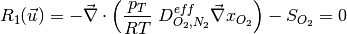

5. Introduction to AppPemfcNIThermal¶
5.1. Introduction¶
A non-isothermal, single phase membrane electrode assembly model (MEA) mathematical model accounting for most applicable heat sources, viz., reversible, irreversile, ohmic heating, phase change, and, heat of sorption/desorption. The thermal transport equation is fully coupled with an MEA model, and non-isothermal effects, such as thermal osmosis through the membrane, local relative humidity variations in the catalyst layers, and water sorption into the membrane, are considered in detail. Different catalyst layer models can be evaluated including:
- macro-homogeneous catalyst layer model
- agglomerate catalyst layer model.
For more information about the model description, please see BhaiyaEA14. If using this application, please cite the article BhaiyaEA14.
5.2. Governing equations¶
The model is based on the following assumptions:
- The fuel cell is at steady state and operates at constant pressure (pressure gradients are negligible).
- The gas mixtures are assumed to have ideal gas behaviour.
- The cathode is fed with humidified air.
- The anode is fed with humidified hydrogen.
- The gas diffusion layers are composed of a porous fibrous matrix.
- The catalyst layer is composed of three phases, viz, platinum supported on carbon, membrane electrolyte ionomer and open (void) space.
- In the case of an agglomerate catalyst layer model being considered, the electrochemical reaction occurs inside the agglomerates.
- The transport of reactants from the gas channels to the catalyst layer occurs only by diffusion of reactant gas to the agglomerate surface and then by dissolution and diffusion through the ionomer to the reaction site.
- The transport of water inside the electrolyte in the membrane and CL is modeled using Springer’s model including thermal osmosis effects.
- The membrane and gas phase in the CL are assumed to be in equilibrium throughout the CL, therefore they are related by means of the sorption isotherm.
- The transport of protons takes place only through the electrolyte, i.e. the Nafion and it is governed by Ohm’s law.
- The transport of electrons takes place only through the solid phase, i.e. the carbon fibers in the GDL and the mixture of carbon supported platinum in the catalyst layer, and is governed by Ohm’s law.
- Very long Brinkmann number flow is assumed, lead to negligible viscous dissipation, and hence neglected in the model.
- Gas and solid phases are in thermal equilibrium. This assumption is fairly valid since there is very high interstitial surface area, and convective heat transfer between these two phases would be sufficiently large such that temperature of all the phases at a particular location in the fuel cell will be approximately equal.
- Two-phase flow and condensation are not considered in this model, therefore the gas phase is allowed to be in super-saturated form.
- Convection effects (including enthalpy transport by convection) are negligible for the fuel cell conditions discussed here.
The governing equations are

where the unknowns are, the oxygen mole fraction, x_{O_2}; the water mole fraction, x_{H_2O}; the electrolyte (membrane) and electronic potentials, \phi_m and \phi_s respectively; the membrane water content, \lambda; and, the temperature, T. The effective transport parameters D^{eff}_{O_2}, D^{eff}_{H_2O}, \sigma^{eff}_{m}, \sigma^{eff}_{s}, D^{eff}_{\lambda}, D^{eff}_T, and ``k^{eff}`, are different in the membrane, GDL and CL and depend non-linearly on the design variables. Due to the solution methodology, all equations need to be solved in all the domains, i.e. GDL, CL and membrane. However, some equations are not necessary in some of the cell domains. This is addressed by making the unnecessary transport parameters zero.
The source terms in the system of equations are given by
and
![S_{T} = \left\{
\begin{array}{cl}
\sigma^{eff}_s ( \vec{\nabla} \phi_s \cdot \vec{\nabla} \phi_s ) \quad & \text{in GDL and MPL} \\~\vspace{-10 pt}\\
\sigma^{eff}_m ( \vec{\nabla} \phi_m \cdot \vec{\nabla} \phi_m ) \quad & \text{in Membrane} \\~\vspace{-10 pt}\\
-(\nabla \cdot \vec{i}) \eta + \frac{\nabla \cdot \vec{i}}{2F} ( -T f_{ORR} \Delta \bar{S}_{overall} - \bar{H}_{lv} ) + \sigma^{eff}_m ( \vec{\nabla} \phi_m \cdot \vec{\nabla} \phi_m ) \\ \qquad + \sigma^{eff}_s ( \vec{\nabla} \phi_s \cdot \vec{\nabla} \phi_s ) +k_t \frac{\rho_{dry}}{EW} ( \lambda_{eq} - \lambda ) \bar{H}_{sorption} \quad & \text{in CCL} \\~\vspace{-10 pt}\\
(\nabla \cdot \vec{i}) \eta + \frac{\nabla \cdot \vec{i}}{2F} ( -T (1-f_{ORR}) \Delta \bar{S}_{overall} ) + \sigma^{eff}_m ( \vec{\nabla} \phi_m \cdot \vec{\nabla} \phi_m ) \\ \qquad + \sigma^{eff}_s ( \vec{\nabla} \phi_s \cdot \vec{\nabla} \phi_s ) +k_t\frac{\rho_{dry}}{EW} ( \lambda_{eq} - \lambda ) \bar{H}_{sorption} \quad & \text{in ACL}
\end{array}
\right.](../_images/math/cbbe7a8869f8ed00623b8a4c030e626cdb34b294.png)
where \lambda_{eq} is given by the sorption isotherm reported by Hinatsu et al. at the corresponding water vapour activity value in the specific location in the CL.
5.3. Example 1: A simple polarization curve¶
This examples demonstrates the calculation of a polarization curve based on the non-isothermal MEA model. This calculation is based on a default selection of material properties described below. A regression test has been performed with three adaptive refinement steps and hundred points on the polarization curve down to an cell voltage of 0.01 Volts. The results of the run scripts are plotted against these regression results.
5.3.1. Simulation Setup¶
5.3.1.1. The Data Files¶
The main.prm, data.prm and opt.prm files are identical to the global template files, except for small modifications through the lexicographic replacer sed executed by the run.sh file.
5.3.2. Simulation Execution¶
5.3.2.2. Postprocessors¶
The simulation produces a number of result files. The most important are:
- logfile.log - The main logfile, useful for debugging purposes
- data_polcurve.dat - The result file from the optimization. This can be used to generate polcruves, water crossover curves, voltage loss breakdowns and many more.
- .vtu files - VTK files which can be read with any recent viewer supporting vtk (e.g. Paraview, ViSIT, Mayavi2, ...). OpenFCST ships with a posprocessor to generate a correctly ordered collection file (.pvd)
{kind=link}
{kind=link}
5.4. Example 2: M. Bhaiya et al., Analysis of non-isothermal effects on polymer electrolyte fuel cell electrode assemblies¶
5.4.1. Abstract¶
A non-isothermal, single phase membrane electrode assembly (MEA) mathematical model accounting for most applicable heat sources, viz., reversible, irreversible, ohmic heating, phase change, heat of sorption/desorption, is presented. The mathematical model fully couples a thermal transport equation with an MEA model and allows the study of non-isothermal effects, such as thermal osmosis through the membrane, local relative humidity variations in the catalyst layers and water sorption into the membrane. A detailed breakdown of various heat sources in the MEA at different current densities is provided and the impact of various thermal effects previously neglected in the literature such as thermal-osmosis, reversible heat distribution, and heat of sorption are studied. Results show that sorption heat cannot be neglected as it contributes up to 10% of the total heat under normal operating conditions. Reversible heat distribution can significantly affect the temperature distribution shifting the hottest location of the cell from anode and cathode. Analyzing the water transport across the membrane, results show that thermal-osmosis contributes up to 25% of the water flux inside the membrane at moderate and high current densities. The microporous layer (MPL) thermal conductivity is found to have a significant effect on fuel cell performance with severe dry-out observed at low MPL thermal conductivities.
5.4.2. Directory structure¶
This folder contains the files used in order to reproduce the results reported in reference [1].
The data is subdivided as follows:
1. Directory template/ contains the main main.prm, data.prm and opt.prm file used in the simulations. In each of the sub-folders these files are extended. This template directory contains separate files for isothermal and non-isothermal simulations. Both the simulations use different applications, namely, Pemfc, and PemfcNIThermal. However, geometry configuration, transport properties, operating conditions, kinetics properties etc, are all maintained same. Base case in the template file represents, cell temperature (for the isothermal case), or bipolar plates (for the non-isothermal case) at 80C, anode/cathode pressure at 1.0 atm, and anode/cathode relative humidity at 50 %.
2. Directory section_5/ contains the files to run various cases discussed in the Section 5 (Results and Discussion) of the reference [1]. At base level of this directory, there are various named folders, which extend the template files to simulate various operating conditions. These files are used in describing results in various subsections of the section 5 in the article. The names of these folders are self-explanatory. For instance, nonisothermal_RH_50_P_2atm, simulates a non-isothermal MEA model at 50 % anode/cathode RH, and anode/cathode pressure at 2.0 atm.
2(i). Sub-directory section_5_4 contains the additional files required for Section 5.4 of the article. This subsection primarily deals with the effects of considering heat of sorption in the non-isothermal model predictions. So the additional files in here, turn heat of sorption effects OFF, besides varying operating conditions.
2(ii). Sub-directory section_5_5 contains the additional files required for Section 5.5 of the article. This subsection primarily deals with the effects of reversible heat distribution in the non-isothermal model predictions. So the additional files in here, vary the fraction of reversible heat in the ORR, at base case (default value of the fraction is 1.0).
2(iii). Sub-directory section_5_6 contains the additional files required for Section 5.6 of the article. This subsection deals with the effects of considering thermal osmosis in the non-isothermal model predictions and water management of the cell. So the additional files in here, turn thermal osmosis OFF, besides varying operating conditions.
5.4.3. Template files¶
5.5. References¶
- Bhaiya, A. Putz and M. Secanell, “Analysis of non-isothermal effects on polymer electrolyte fuel cell electrode assemblies”, Electrochimica Acta, 147C:294-309, 2014. DOI: http://doi.org/10.1016/j.electacta.2014.09.051